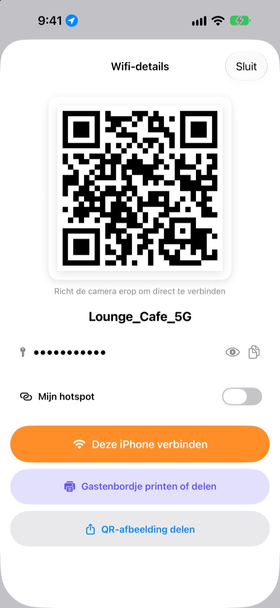
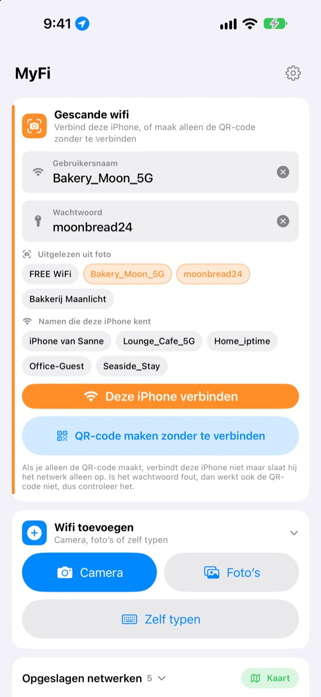
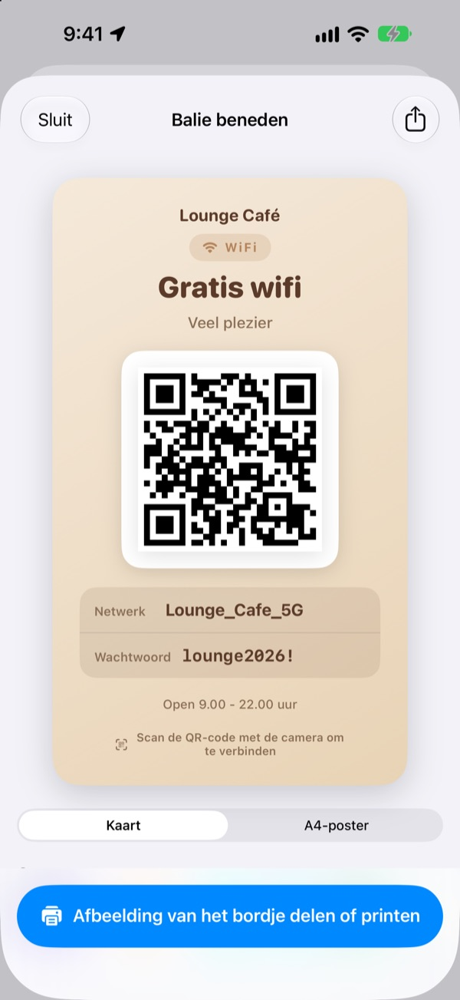
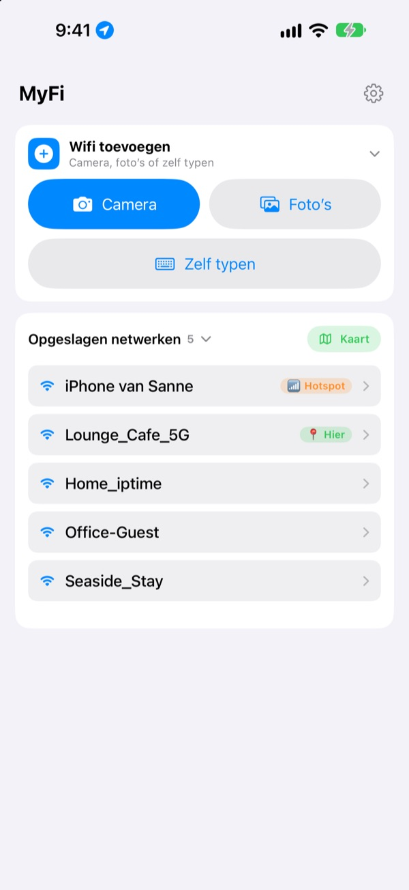

Geen wachtwoorden meer voorlezen.
Laat een QR-code zien.
Vrienden richten hun camera erop en ze zijn online. Het bordje aan de muur van het café? Eén foto en deze iPhone maakt verbinding. Geen typefouten meer bij het overschrijven.
Alle functies zijn gratis. iPhone met iOS 17 of nieuwer.

Maak de QR-code van je wifi
Pas de naam of het wachtwoord aan en het bordje verandert meteen mee. Richt de camera van een telefoon erop en je krijgt echt de vraag om verbinding te maken.
‘Wat was het wifi-wachtwoord ook alweer?’ Hoe vaak al vandaag?
Je leest het voor en verwisselt hoofdletters. Je schrijft het bordje aan de muur over en haalt 0 en O door elkaar. Daarna leg je alles opnieuw uit. MyFi maakt er één foto en één QR-code van.
Foto maken en je bent online
Fotografeer het wifi-bordje of de kassabon, of kies een foto uit je bibliotheek. MyFi leest de netwerknaam en het wachtwoord en verbindt deze iPhone. Staat er ook een QR-code op het bordje, dan leest hij die eerst, zodat de gegevens precies kloppen.
Is de tekst onduidelijk, sleep dan een stukje uit de foto naar het veld voor naam of wachtwoord.

Maak en print een gastenbordje
Kies een van de 7 thema’s en voeg naam, logo en regels zoals openingstijden toe. Kies een kaart of een staande A4-poster, bewaar het als afbeelding of print het meteen met AirPrint.
Houd meerdere bordjes bij, één per zaak of tafel, en pas ze aan wanneer je wilt.

Plekken waar je terugkomt, staan bovenaan
Netwerken waarmee je verbindt of die je deelt, worden met de plek bewaard. Kom je terug, dan staat dat netwerk bovenaan, en alle bewaarde plekken zie je op een kaart.
Zet de QR-code van je meest gedeelde wifi als widget op je beginscherm of toegangsscherm. Vraagt een gast erom, dan laat je gewoon je scherm zien.

In drie stappen klaar
- 1
Open de app
Hij vraagt één keer om je locatie, omdat iOS de naam van je huidige wifi alleen doorgeeft aan apps met die toestemming.
- 2
Fotografeer of typ
Maak een foto van een bordje, of typ eenmalig het wachtwoord van je eigen wifi.
- 3
Verbind of laat zien
Verbind deze iPhone, of houd de QR-code voor de camera van de ander.
Waar vind je wat
- Verbinden met een foto van een bordje
Wifi toevoegen, danCameraofFoto’s, danDeze iPhone verbinden- Gegevens zelf invoeren
Wifi toevoegen, danZelf typen- Alleen een QR-code maken
QR-code maken zonder te verbinden- QR-code in een bericht sturen
- Tik op een opgeslagen netwerk, dan
QR-afbeelding delen - Gastenbordje
- Tik op een opgeslagen netwerk, dan
Gastenbordje printen of delen - Je eigen hotspot als QR-code
- Tik op een opgeslagen netwerk en zet
Mijn hotspotaan - Verbinden of delen met één veeg
- Veeg in de lijst naar rechts om te verbinden, naar links om te delen
- Bewaarde plekken bekijken
Kaart, naastOpgeslagen netwerken- QR-code op je beginscherm
- Houd je beginscherm ingedrukt en voeg de MyFi-widget
Wifi-QRtoe
Je kunt de QR-code ook direct openen met Siri of de Opdrachten-app.
Alle functies zijn gratis
Gratis
- Verbinding met wifi via een foto
- QR-codes maken en als afbeelding delen
- Gastenbordjes in 7 thema’s, als kaart of A4-poster, printen met AirPrint
- Widgets voor beginscherm en toegangsscherm
- Kaart van je bewaarde wifi
- Geen advertenties, geen account
Fooi (vrijwillig)
- Bevalt de app, dan kun je de ontwikkeling steunen met een fooi
- Een fooi ontgrendelt niets. Zonder fooi heb je ook alle functies
Een fooi is een kleine eenmalige betaling.
Geen abonnement en geen betaalde functies.
Veelgestelde vragen
Waarom moet ik mijn wachtwoord zelf typen?
iOS laat geen enkele app de wifi-wachtwoorden lezen die op je apparaat zijn bewaard. Daarom herkent MyFi de netwerknaam en typ jij het wachtwoord één keer. Daarna gebruikt de app het bewaarde.
Ik zie de naam van mijn huidige wifi niet.
iOS geeft de wifi-naam alleen aan apps met locatietoegang. Sta MyFi toe in Instellingen › Privacy en beveiliging › Locatievoorzieningen. De locatie wordt alleen gebruikt om de netwerknaam te lezen en plekken te herkennen waar je terugkomt.
De naam of het wachtwoord is verkeerd gelezen.
Ga dichterbij staan en fotografeer recht. Klopt het nog niet, sleep dan het juiste stukje uit de foto naar het veld of verbeter het zelf. Heeft het bordje een wifi-QR-code, dan leest MyFi die en vult de exacte gegevens in.
Welke bordjes kan hij lezen?
Het best gaat het met bordjes in het Engels of Koreaans met labels zoals ID, PW, SSID, Network of Password. Ook zonder labels vindt hij de regel die op een wachtwoord lijkt. Een wifi-QR-code op het bordje wordt in elke taal exact gelezen.
Hoe maakt iemand verbinding met mijn QR-code?
Op iPhone en Android richt je gewoon de ingebouwde camera op de code en tik je op de vraag om verbinding te maken. Een app is niet nodig.
Kunnen anderen mijn wachtwoord zien?
De QR-code bevat de gewone wifi-inloggegevens. Of je hem deelt, bepaal jij altijd zelf, en op het gastenbordje kun je het wachtwoord verbergen.
Waarom kan ik niet verbinden met mijn eigen hotspot?
De persoonlijke hotspot van je iPhone is de telefoon zelf, en die kan niet met zichzelf verbinden. Zet Mijn hotspot aan, dan behandelt MyFi hem als een QR-code om uit te delen.
Waar gaan mijn wifi-gegevens naartoe?
MyFi heeft geen server. Netwerknamen, wachtwoorden, fotoresultaten en locaties worden alleen op je apparaat verwerkt en bewaard. Geen advertenties of tracking. De app stuurt alleen anonieme gebruiksstatistieken en foutmeldingen naar Apple iCloud, zodat hij verbeterd kan worden.
Op welke apparaten werkt het?
Op iPhone met iOS 17 of nieuwer. De app is er in 24 talen.
Vragen of feedback? Mail naar leeo@kakao.com. Meestal antwoord ik binnen 2 à 3 dagen.